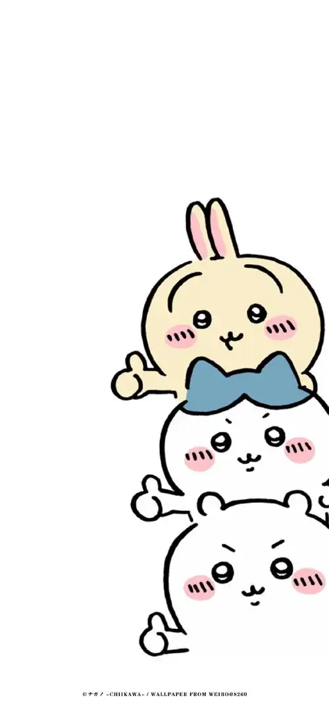

约会事件薄
把“想去哪里”聊清楚一点，再温柔地排个顺序。
最终分 = (我 + 你) × 现实系数

先丢一个想法进来
不用一开始就很严肃，先把想去的地方记下来，再选这次最在意的 5 个点。
这个算法怎么理解？
它适合做“约会备选排序”，不适合假装成绝对真理。主观 5 项负责回答“我们想不想去”，现实系数负责回答“今天适不适合去”。
现在的公式 (我的评分 + 你的评分) × 权重系数 是合理的，但建议现实系数只勾 1-3 个真正关键的因素。系数连乘太多会把分数放得过大或压得过低，反而盖过两个人的真实偏好。